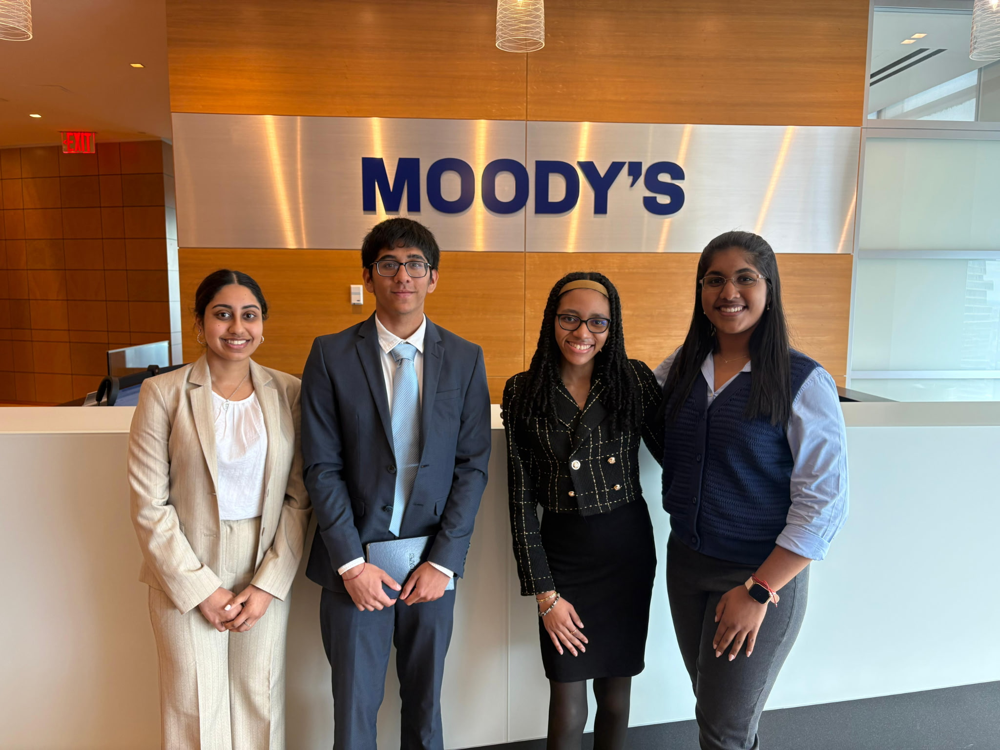

Work / Interests
Hofstra AI Society
I founded Hofstra’s first student-led organization centered on analytics, artificial intelligence, and emerging technologies. I design and facilitate workshops that make AI and data science concepts more accessible through hands-on learning and collaboration.
Hardline Capital
I serve as Treasurer and an Information Technology Sector Financial Analyst within a student-managed fund simulating $10 million in capital. I analyze financial and market datasets to evaluate risk-return profiles, performance trends, and investment opportunities.
Grant Management Services
As a Data Analytics Intern for Finance and Compliance Systems, I built and maintained structured financial datasets by organizing transaction-level data from multiple sources. I also performed data validation and reconciliation to support accurate reporting across financial records.
EisnerAmper
As a Real Estate Private Equity intern through Project Destined, I examined projected cash flows, valuation inputs, and market trends across multiple property types while contributing to a live deal pitch competition.
Extern x PwC
As a Strategy Consulting intern, I worked on projects focused on business transformation and growth strategy, including financial optimization plans and strategic recommendations.
Interest Filter
Use the dropdown below to filter my projects and experiences by category. This feature uses JavaScript arrays, a switch statement, and DOM manipulation to dynamically display content.